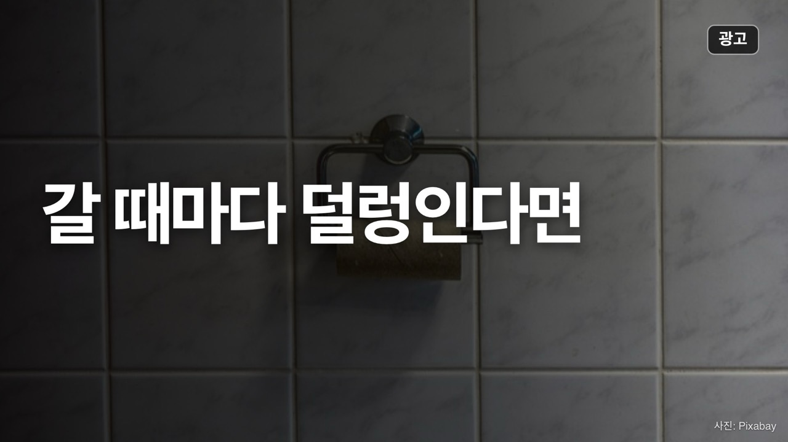

이 게시물은 쿠팡 파트너스 활동의 일환으로, 이에 따른 일정액의 수수료를 제공받습니다.
화장실 휴지걸이 교체, 구멍 안 뚫고 바꿀 수 있을까? 벽 재질로 갈리는 세 가지
휴지걸이를 바꿀 때 먼저 볼 것은 걸이가 아니라 벽이에요. 매끈한 타일·유리·대리석 벽이면 구멍 없이 붙이는 스테인리스 걸이(5,900원)로 끝나고, 벽지·페인트 벽이면 붙이는 형은 떨어질 수 있어 앵커·나사로 박는 타공형(7,040원)이 맞아요. 이 순서만 지키면 전셋집 벽에 괜히 구멍을 내거나, 붙였다 떨어진 걸이를 서랍에 넣는 일을 피할 수 있어요.

우리 집 벽이면 어떤 걸이가 맞나요?
- 매끈한 타일·유리·대리석 벽, 구멍은 싫은 집 → 붙이는 스테인리스 걸이(앞날창창). 상세에 '타일, 유리, 대리석, 금속처럼 매끄럽고 평평한 면에 적합'하다고 적혀 있어요.
- 같은 타일 벽인데 휴대폰·물티슈 둘 자리도 필요한 집 → 받침대 달린 치트몰 무타공 거치대. 대신 재질이 스테인리스가 아니라 두꺼운 ABS(플라스틱)예요.
- 벽지·페인트 벽, 또는 울퉁불퉁한 벽 → 타공형. 앞날창창 상세가 '벽지, 페인트 벽, 울퉁불퉁한 벽면에는 부착력이 약할 수 있다'고 직접 적었어요.
주문 전에 손바닥으로 벽을 한 번 쓸어 보세요. 매끈하고 평평한지가 붙이는 형의 첫 조건이에요.

세 개 값 차이는 얼마나 되나요?
11월 6일 쿠팡 표시 기준이에요.
| 걸이 | 가격 | 재질 | 크기 | 상품평 |
|---|---|---|---|---|
| 앞날창창 붙이는 형 | 5,900원 | 스테인리스 | 16×8cm(부착판 약 10.3×4.5cm) | 776개 |
| 치트몰 거치대형 | 6,300원(그레이) | ABS | 받침대 18cm | 4,758개 |
| 타공형 | 7,040원 | 스테인리스 | 9.1×5.5×16cm | 69개 |
붙이는 형에 선반을 더하는 값은 400원, 구멍을 내는 타공형으로 가는 값은 1,140원 차이예요. 값으로는 거의 갈리지 않으니, 벽 재질과 선반이 필요한지로만 고르면 돼요.
타일 벽에 구멍 없이, 앞날창창 스테인리스 휴지 걸이대 — 가격·구매처 보기
휴대폰·물티슈 올릴 판까지, 치트몰 무타공 핸드폰 거치대 휴지걸이 — 가격·구매처 보기
붙이는 형은 언제부터 휴지를 걸 수 있나요?
부착 순서는 벽면 닦기 → 보호필름 떼기 → 붙이기 → 시간이 지난 뒤 사용이에요. 몇 시간인지는 상세에 숫자가 없어요. 붙이자마자 새 휴지부터 걸지는 마세요.
같은 상세에 '습기와 물기가 많은 환경에서는 접착력이 떨어질 수 있으니 주기적으로 고정 상태를 확인하라'는 문구가 있어요. 샤워기 물이 바로 튀는 자리는 피하세요. 가로·세로 둘 다 붙일 수 있다고 적혀 있어요.

구멍을 내기로 했다면 무엇을 준비하나요?
타공형은 드라이버로 구멍 → 해머로 앵커 박기 → 베이스를 나사로 고정 → 걸이 끼우기, 4단계예요. 타일에 구멍을 낼 공구가 집에 없다면 붙이는 형보다 준비가 커져요.
떼어 낸 옛 걸이 구멍을 다시 쓰고 싶다면 구멍 간격이 맞아야 하는데, 타공형 상세에서 나사 간격을 찾지 못했어요. 그 숫자 하나는 주문 전에 판매자 문의로 받아 옛 구멍 간격과 대 보는 게 좋아요.
벽지·페인트 벽이라 박아서 고정할 집, 스테인리스 휴지 걸이대 타공형 — 가격·구매처 보기

확인하지 못한 것
세 제품 모두 견디는 무게 수치가 없고(치트몰 사진은 휴대폰·물티슈 정도), 붙인 뒤 기다리는 시간과 타공형 나사 간격은 상세에 없었어요. 가격·상품평 수는 11월 6일 표시값이라 여는 날엔 다를 수 있고, 크기·재질·설치 순서는 판매 페이지와 상세 이미지 글자를 옮긴 것으로 직접 써 본 후기는 아니에요.